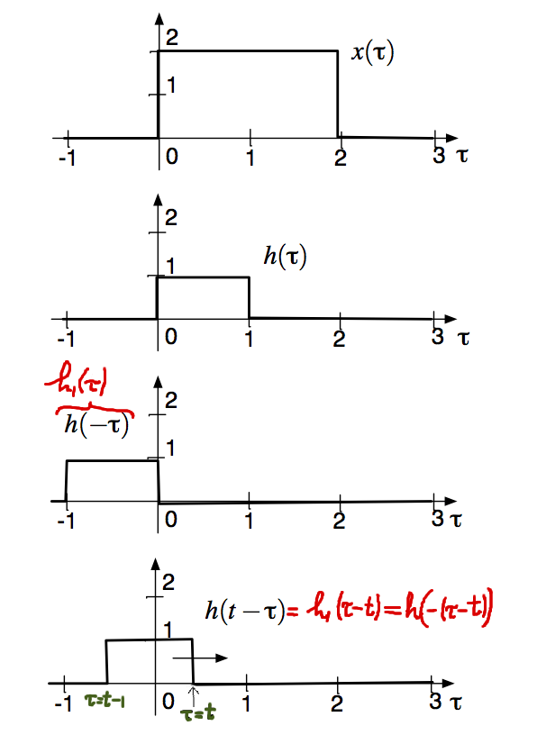
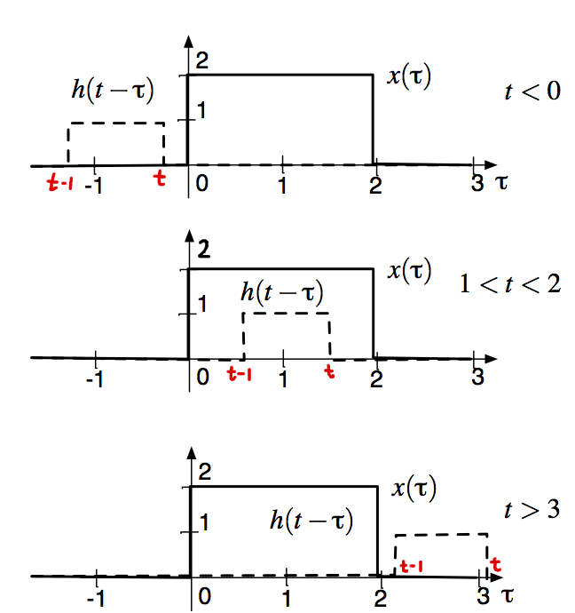
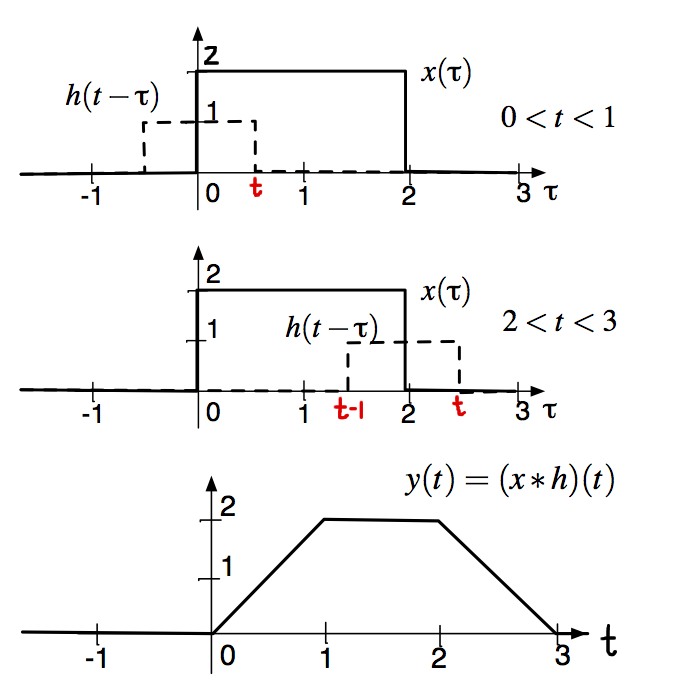

\( \def\df{\triangleq} \def\E{\mathrm{e}} \def\J{\mathrm{j}} \def\upi{π} \def\Exp{{\rm E}\,} \DeclareMathOperator{\Pr}{Pr} \DeclareMathOperator{\Realpart}{Re} \def\td{\text{d}} \def\dif{{\rm d}} \)
Compute $y(t) = ( x \star h )(t)$ for \(x(t)= 2 \, \mathbb{1}_{(0,2)}(t)\) and \(h(t) = \mathbb{1}_{(0,1)}(t)\).

Critical time points: $t–1=0$ and $t=0$ as well as $t–1=2$ and $t=2$, i.e., \(t = 0,1,2,3\), meaning that we have $5$ intervals to consider for $t$:

